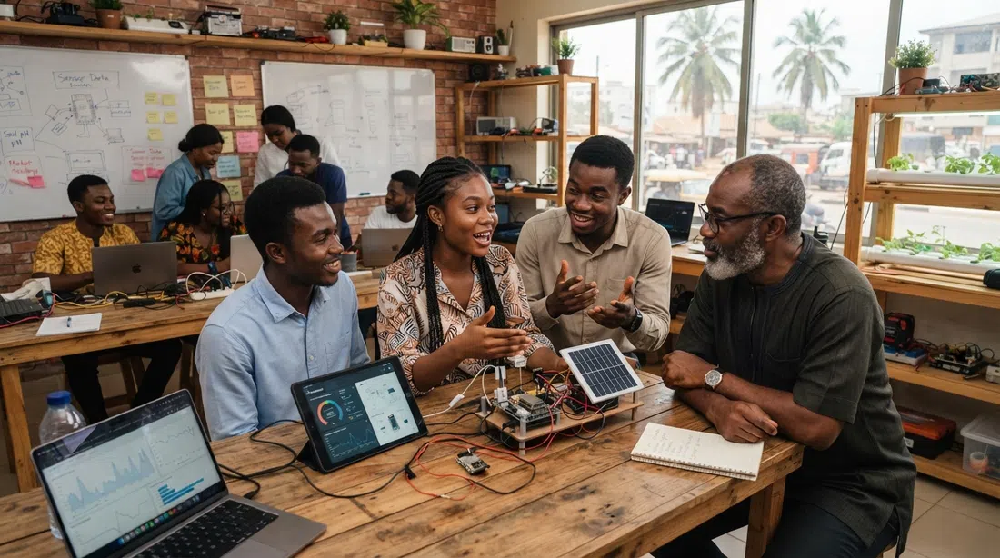

AGROPULSE GLOBAL SOLUTIONS
Des réalités de terrain aux solutions numériques.
AgroPulse Global Solutions accompagne les filières agricoles avec du conseil, des systèmes d’information et des services numériques.
AGROPULSE GLOBAL SOLUTIONS
Le numérique au service des filières agricoles.
Conseil et solutions numériques pour accompagner la transformation digitale et verte de l’agriculture.
Pays d’intervention indiqués : Côte d’Ivoire, Sénégal et Guinée-Bissau.
NOTRE APPROCHE
Conseil · données · innovation
Une offre articulée autour de huit pôles complémentaires, présentés sur la page Expertises.
Découvrir les expertises ↗